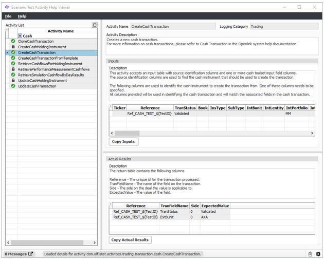

Scenario Test Automation Tool - activity Help Viewer |
|
Scenario Test Automation Tool - activity Help Viewer |
|
The Scenario Test Activity Help Viewer allows users to view the available Scenario Test Activities and get detailed information about each activity.
Note: There are multiple ways to access this window; however, only one way is defined because some features can only be accessed via this procedure.
1. From OpenLink Central, right-click anywhere on the header and select Launch Available Services. The Launch Available Services window displays.
2. Type Scenario Test Activity Help Viewer in the Filter Service field, highlight Scenario Test Activity Help Viewer in the Available Services panel, and then click Launch. The following window displays:

The list of available Activities. This list is created from all scripts that are saved with the “Scenario Test Automation Tool Activity” category. Selecting a row in this list will cause the details for the activity to be loaded into the right side of the screen.
A text description of the purpose of the Activity with general information about what the Activity does.
Information about the expected inputs for the Activity.
A text description of what the Activity is expecting as input.
One or more tabs containing sample data of the expected input. The data can be copied by right-clicking on the grid and selecting Copy Current View, or via the Copy Inputs button below the data. The copied data can then be pasted into a scenario worksheet.
Information about the expected actual results of the Activity.